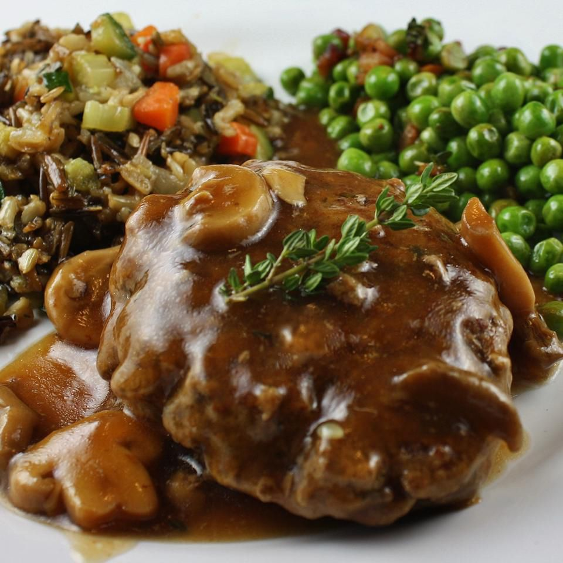

Midwest Salisbury Steak with Mushrooms

Salisbury Steak with Mushrooms
This Salisbury steak with mushroom gravy is wonderful over mashed potatoes or rice. A great from-scratch recipe I found a long time ago. The gravy is still good without mushrooms.
Ingredients
- 1 pound lean ground beef
- ⅓ cup dry bread crumbs
- ¼ cup chopped onions
- 1 egg, beaten
- 1 teaspoon salt
- ¼ teaspoon ground black pepper
- 2 cups beef broth
- 1 large onion, thinly sliced
- 1 cup sliced mushrooms
- 3 tablespoons cornstarch
- 3 tablespoons water
Steps
- Combine ground beef, bread crumbs, chopped onion, egg, salt, and black pepper in a large bowl until evenly mixed. Shape beef mixture into 4 patties, about 3/4-inch thick.
- Fry patties in a large skillet over medium heat until browned on both sides, about 10 minutes. Add beef broth, onion, and mushrooms; bring to a boil. Reduce heat to low, cover, and simmer until patties are no longer pink in the center, about 10 minutes more. Transfer patties to a platter and keep warm.
- Bring onion mixture to a boil. Mix cornstarch and water in a small bowl; stir into onion mixture. Cook and stir until onion gravy is thickened, about 1 minute. Pour over patties to serve.